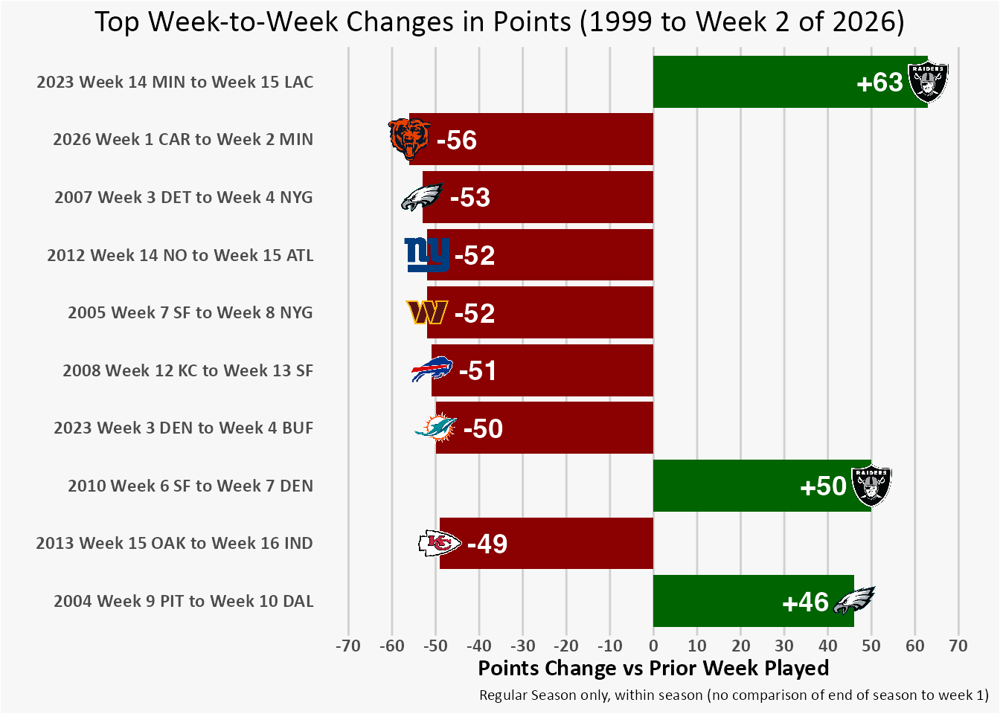
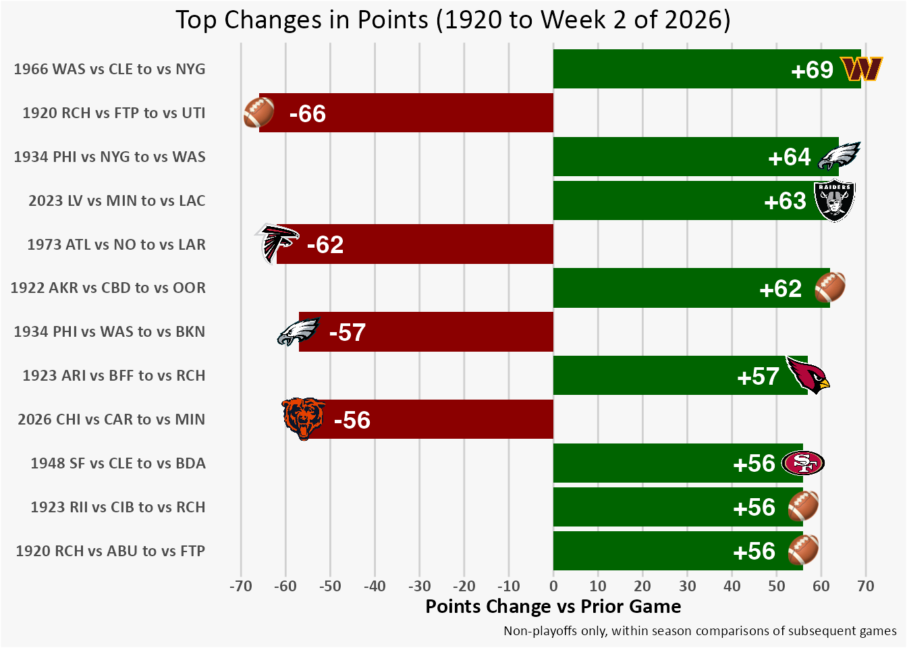

Weather certainly played a factor, and it looked like our QB Caleb Williams might have been about to score a touchdown on the play where he went down with a non-contact injury. 😖 But overall, week 2 was a struggle for my Bears and they never found the end zone. This was a dramatic change from week 1, where they scored more points than any Bears game since 1980.
How does the huge change in points scored compare to any other week-to-week swings?
Nitty-gritty details: I am looking at just the regular season, and total points scored — not distinguishing whether they were offensive or defensive or special teams. I’m also going to consider either direction, negative drop offs of decreasing points or positive bounce backs of increasing points.
The biggest change in points scored week to week since 1999 (the earliest year available in the nflverse data) is the Las Vegas Raiders in 2023, who went from no points in a loss to the Vikings in week 14 to putting up 63 to defeat the Chargers in week 15 (leading to firing of the Charger’s head coach Brandon Staley and general manager Tom Telesco the next day). But that was a bounce back for the Raiders, an increase in points.
The Bears drop off from 59 points to just 3, a -56 point swing, is the biggest letdown since 1999.
While the nflverse only has data going back to 1999, FiveThirtyEight has a historical data set going back to 1920. Historical seasons didn’t exactly have schedules with “weeks”, but I will still compare each team’s points to what it scored in their prior game, again limited to within-season and regular season (aka not playoffs) comparisons only.1
Only three other teams have had worse point declines than the Bears.
The biggest historical decline in points in a subsequent game came in 1920 for the Rochester Jeffersons (RCH).
They played an informal game again a non-league military team Fort Porter (FTP), beating them 66-0 on October 10, 1920.
Then on October 17, 1920 they tied 0-0 with the Utica K. of C. (UTI).
Only a couple other huge point swings from actual league competition were worse than the Bear’s drop off: The 1973 Atlanta Falcons and the 1934 Philadelphia Eagles. That’s 53 and 92 years ago, respectively.2
So the Bears didn’t have the historically worst drop off in points ever, but… 😖

Footnotes
Minor data cleaning note: No other cleaning was done before finding the largest point changes, but prior to graphing some inconsistencies were observed and corrected with teams WSH and RED reclassified to the current abbreviation of WAS for the historical predecessors of the Washington Commanders. Note that the 1923 ARI (pictorially represented in the graph as the Arizona Cardinals) were the Chicago Cardinals, who were the historical predecessor (via St. Louis) of the Arizona Cardinals.↩︎
Update that after doing this analysis and write up, I did stumble upon some others also digging into this. I was focusing on total points, and not distinguishing offensive versus defensive/special team points, which is why they say they excluded the Raiders and we’ll have slightly different results. I’m not sure about any of those other swings in the positive direction — if they contained a lot of defensive/special teams points, or if the other analyst was intentionally only looking at drop offs. But those details likely account for our slight inconsistencies: The Washington 1966 game vs NYG, for example, did contain defensive and special teams touchdowns.↩︎